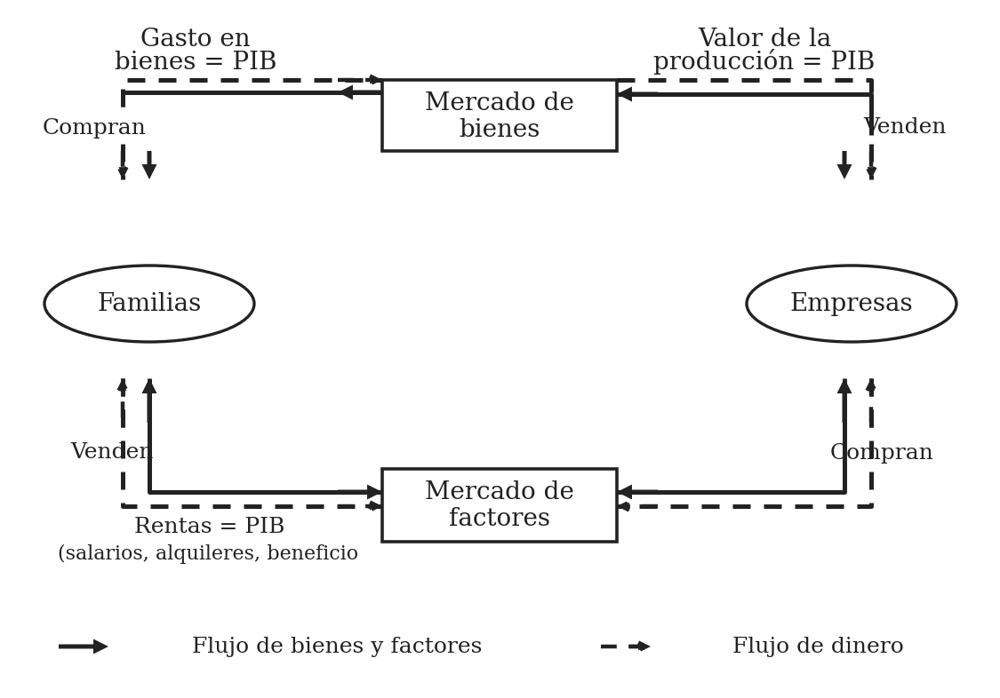

6 Macromagnitudes (I): producción y empleo
6.1 La producción
6.1.1 El producto interior bruto (PIB)
El Producto Interior Bruto (PIB) es el valor de mercado de todos los bienes y servicios finales producidos en un territorio durante un periodo determinado.
Como hay muchos bienes que pueden ser intermedios o finales, en la práctica se mide como la suma total del valor añadido (VA).
El PIB es una variable que se mide durante un periodo de tiempo determinado (año, trimestre…). Ese tipo de variable se llama variable flujo.
6.1.1.1 Variables flujo y variables fondo (stock)
Variables flujo: se miden en un periodo de tiempo.
- La renta o ingreso de una persona durante un mes.
- El PIB mide el valor de los bienes y servicios producidos durante un periodo (año, trimestre…).
Variables fondo (stock): se miden en un instante en el tiempo.
- La riqueza de una persona (dinero en el banco…).
- El capital físico de una empresa (maquinaria, edificios…).
- La deuda pública.
- La tasa de desempleo.
El PIB es un indicador de la actividad económica de un territorio. Sirve para hacer comparaciones entre:
- Diferentes territorios en un mismo periodo de tiempo.
- Diferentes periodos en un mismo territorio.
La comparación entre periodos permite estudiar el crecimiento económico.
El valor de mercado de los bienes puede variar por dos motivos:
- Variación en las cantidades producidas.
- Variación en los precios.
Para saber si ha crecido la producción, hay que eliminar el efecto de la variación en los precios.
6.1.2 PIB nominal y PIB real
PIB nominal (o a precios corrientes): suma de todos los bienes y servicios finales multiplicados por su precio corriente.
- Precio corriente: precio vigente en el periodo de producción.
PIB real (o a precios constantes): suma de todos los bienes y servicios finales multiplicados por un precio constante, con base en un año de referencia.
- Precio constante: precio vigente en un periodo de referencia o «base».
Si queremos medir la evolución de la producción a lo largo del tiempo, debemos usar el PIB real.
6.1.2.1 Ejemplo: cantidades y precios de tres bienes finales
Cantidades y precios en un territorio en el que se producen solo tres bienes finales.
Tabla: Cantidades y precios de los bienes finales
| Bien | Año 0: cantidad | Año 0: precio | Año 1: cantidad | Año 1: precio | Año 2: cantidad | Año 2: precio |
|---|---|---|---|---|---|---|
| Máquinas | 500 unid. | 20.000 € | 500 unid. | 40.000 € | 625 unid. | 44.000 € |
| Alimentos | 20.000 Tn. | 100 € | 20.000 Tn. | 200 € | 18.000 Tn. | 150 € |
| Servicios | 40.000 horas | 50 € | 40.000 horas | 100 € | 50.000 horas | 110 € |
PIB nominal del año 0:
\[ (500 \times 20.000) + (20.000 \times 100) + (40.000 \times 50) = 14.000.000 \text{euros} \]
PIB nominal del año 1:
\[ (500 \times 40.000) + (20.000 \times 200) + (40.000 \times 100) = 28.000.000\;€ \]
PIB nominal del año 2:
\[ (625 \times 44.000) + (18.000 \times 150) + (50.000 \times 110) = 35.700.000\;€ \]
Tomando el año 0 como año base:
PIB real del año 0 (base: año 0):
\[ (500 \times 20.000) + (20.000 \times 100) + (40.000 \times 50) = 14.000.000\;€ \]
PIB real del año 1 (base: año 0):
\[ (500 \times 20.000) + (20.000 \times 100) + (40.000 \times 50) = 14.000.000\;€ \]
PIB real del año 2 (base: año 0):
\[ (625 \times 20.000) + (18.000 \times 100) + (50.000 \times 50) = 16.800.000\;€ \]
6.1.3 Los tres enfoques para medir el PIB
6.1.3.1 Enfoque de la producción
El PIB puede medirse como la suma total del valor agregado en la producción. Es el enfoque que se ha visto hasta ahora.
6.1.3.2 Enfoque del gasto
El PIB puede medirse como el gasto total (agregado) que se realiza en un país.
6.1.3.3 Enfoque de las rentas (o de los ingresos)
El PIB puede medirse como la suma total de las rentas del trabajo (salarios) y las rentas del capital (beneficios, alquileres, intereses…).
6.1.3.4 Flujo circular de la renta
Flujo circular de la renta en una economía muy sencilla. No se incluye el Estado ni la relación del país con el exterior y solo hay bienes de consumo.
6.1.4 Componentes del PIB según el enfoque de medición
- Según el enfoque de la producción: la suma de los sectores productivos: agricultura, pesca, industrias extractivas, servicios…
- Según el enfoque de las rentas o ingresos: remuneración de los trabajadores, de los empresarios (beneficios)…
- Según el enfoque del gasto: las familias (consumo), las empresas (inversión), el Estado (gasto público) y el sector exterior (exportaciones netas).
Si consideramos conjuntamente la inversión privada y la inversión pública, lo llamaremos formación bruta de capital.
6.1.5 Qué no mide el PIB
6.1.5.1 ¿El PIB mide toda la actividad económica?
No. El PIB no incluye, entre otras actividades:
- Autoconsumo, trabajo doméstico y trabajo voluntario…
- Economía sumergida.
6.1.5.2 ¿El PIB es un indicador de bienestar?
El PIB no es un indicador de bienestar, aunque hay cierta relación.
Entre los indicadores propuestos para medir el bienestar se encuentran:
- Índice de bienestar económico sostenible (IBES).
- Índice de progreso real/genuino (IPR/IPG).
- Índice de desarrollo humano (IDH), etc.
El PIB per cápita (PIBpc) se incluye en el cálculo del IDH.
6.1.6 Otros indicadores de producción
6.1.6.1 Producto interior neto (PIN)
De toda la inversión, hay una parte dedicada a reponer el capital desgastado. La reposición equivale a la depreciación. El resto es la inversión neta.
Producto Interior Neto (PIN): ajusta el PIB teniendo en cuenta la reposición por depreciación de los activos.
6.1.6.2 Producto nacional bruto (PNB)
Producto Nacional Bruto (PNB): suma de ingresos o rentas totales que se generan a favor de los residentes de un país, se generen donde se generen.
6.1.6.3 Producto nacional neto (PNN)
Producto Nacional Neto (PNN): diferencia entre el PNB y la reposición por depreciación (pérdida de valor).
6.1.6.4 Renta nacional (RN)
Renta Nacional (RN): mide la suma total de todas las rentas generadas a favor de los poseedores de los factores productivos por su aportación al proceso productivo.
6.1.6.5 Renta personal (RP)
Renta Personal (RP): suma de las rentas que reciben las personas.
6.1.6.6 Renta personal disponible (RPD)
Renta Personal Disponible (RPD): es la renta personal menos los impuestos directos sobre las personas (TDP). Se puede usar para consumo o ahorro privados.
6.2 Empleo
6.2.1 ¿Por qué se presta atención al empleo y al desempleo?
El desempleo tiene importantes costes.
A nivel individual:
- Efectos en la salud física y mental.
- Reduce el bienestar individual.
A nivel social:
- Puede generar tensiones sociales (desigualdad).
- Implica recursos sin utilizar y menor crecimiento económico.
6.2.2 Principales magnitudes
6.2.2.1 Clasificación de la población según su relación con el mundo laboral
La población de un país se clasifica según su relación con el mundo laboral. La situación en relación con la actividad económica se basa en criterios de la OIT.
En España, la edad legal para poder trabajar es de 16 años.
6.2.2.2 Tasa de actividad
Tasa de actividad: cociente entre la población activa y la población en edad de trabajar.
\[ \text{Tasa de actividad} =\frac{\text{Poblacion activa}}{\text{Poblacion en edad de trabajar}} \]
6.2.2.3 Tasa de desempleo
Tasa de desempleo: cociente entre los desempleados y los activos; es decir, la proporción de activos que buscan pero no encuentran un puesto de trabajo.
\[ \text{Tasa de desempleo} =\frac{\text{Desempleados}}{\text{Poblacion activa}} \]
6.2.3 Cómo se miden los desempleados
6.2.3.1 Desempleo medido mediante una encuesta: EPA
El desempleo medido con una encuesta —en España, la Encuesta de Población Activa (EPA)— computa como desempleadas a las personas que:
- No hayan tenido un empleo por cuenta ajena ni por cuenta propia durante la semana de referencia.
- Estén disponibles para trabajar.
- Hayan tomado medidas concretas para buscar un trabajo por cuenta ajena o hayan hecho gestiones para establecerse por su cuenta durante el mes precedente.
6.2.3.2 Desempleo registrado: SEPE
El desempleo registrado es el total de demandas de empleo en alta —en España, en el Servicio Público de Empleo Estatal (SEPE)— existentes el último día de cada mes, excluyendo ciertas situaciones.
La metodología estadística es diferente:
- La EPA es una encuesta telefónica realizada por el INE.
- El desempleo registrado del SEPE es un registro administrativo.
6.2.3.3 Paro estimado (EPA): ¿cómo se mide?
La definición operativa de búsqueda activa de trabajo incluye:
- Oficina pública de empleo.
- Oficina privada.
- Enviar candidaturas.
- Sindicatos y contactos personales.
- Responder anuncios.
- Pruebas y concursos.
- Buscar local o material.
- Gestiones de permisos.
No basta solo con inscribirse.
6.2.3.4 Paro registrado (SEPE): ¿cómo se mide?
Se consideran las demandas de empleo registradas el último día de cada mes, excluyendo ciertas situaciones:
- Pluriempleo.
- Personas que buscan un mejor empleo.
- Colaboradores sociales que perciben prestación por desempleo.
- Jubilados.
- Quienes buscan empleo coyuntural (3 meses).
- Quienes buscan empleos de menos de 20 horas a la semana.
- Estudiantes.
- Trabajadores agrícolas subsidiados.
- Quienes rechazan ofertas.
- Demandantes sin disponibilidad inmediata.